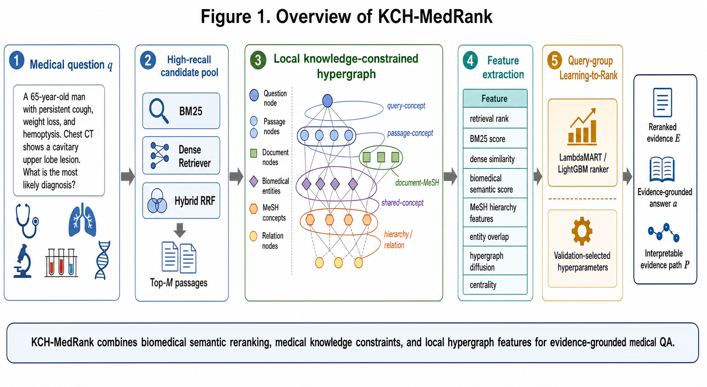
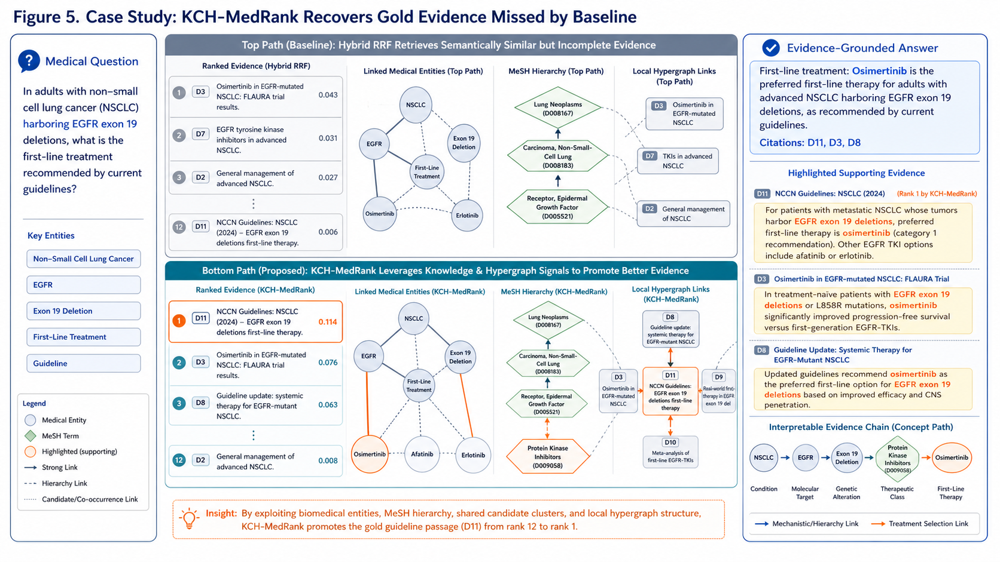

医学知识特征是否单独有效？
MeSH 层级、实体重叠和 PrimeKG 关系能否不依赖图结构就提升排序。
循证医学问答要求系统先检索到可靠的生物医学证据，再生成或选择答案。普通 RAG 常按词汇重叠或嵌入相似度逐段打分，但医学证据经常藏在疾病、药物、基因、MeSH 概念和文档之间的高阶关系里。
一个典型盲点
关于 DITPA 的问题和关于左甲状腺素的段落，表面词可能很少重叠，但它们同属 “甲状腺激素” MeSH 子树。成对查询-段落打分很难主动利用这层共享医学结构。
MeSH 层级、实体重叠和 PrimeKG 关系能否不依赖图结构就提升排序。
裸拓扑是否会引入噪声，或能捕捉普通 pairwise 图丢失的多元关系。
用 MeSH、实体和关系锚定局部结构，是否能让结构信号变得可用。
论文的贡献不是发明 RAG 或 GraphRAG，而是把医学受控词表、实体和局部超图变成 可复现、可解释、可消融的证据控制层。
BM25、稠密检索、fielded BM25 和 MedCPT dual-encoder 组成增强候选池。
围绕每个问题和 top-100 候选构建问题、段落、文档、实体和 MeSH 概念节点。
从问题节点、问题实体和问题 MeSH 出发传播质量，得到段落级结构信号。
把检索、语义、MeSH、实体、关系和结构特征输入 query-group 排序模型。

问题、候选段落、文档、生物医学实体、MeSH 概念、层级概念、可选关系端点。
question-entity、passage-entity、document-MeSH、shared-entity、MeSH hierarchy、PrimeKG relation。
原始排名、BM25/稠密/RRF 分数、MedCPT 语义、MeSH 层级、实体覆盖、扩散与中心性。
最稳健的主张是 evidence retrieval 的提升，尤其是 Recall@10。MRR@10 和 nDCG@10 对强语义重排序器是正向趋势，但不应过度表述为显著优势。
| 方法 | Recall@10 | MRR@10 | nDCG@10 | Recall@100 |
|---|---|---|---|---|
| 原始 Hybrid RRF | 0.4636 | 0.7550 | 0.5848 | 0.6077 |
| 增强 Hybrid w122 | 0.4660 | 0.7530 | 0.5844 | 0.7388 |
| MedCPT Cross-Encoder | 0.5172 | 0.7775 | 0.6390 | 0.7388 |
| 增强 KCH-MedRank | 0.5329 | 0.7867 | 0.6433 | 0.7388 |
| 数据集 | 方法 | Recall@10 | MRR@10 | nDCG@10 |
|---|---|---|---|---|
| PubMedQA | Hybrid RRF | 0.8200 | 0.9850 | 0.8369 |
| PubMedQA | HGB 知识重排序器 | 0.8953 | 0.9861 | 0.9021 |
| NFCorpus | Hybrid RRF | 0.1676 | 0.5530 | 0.3436 |
| NFCorpus | Retrieval-feature LambdaMART | 0.1770 | 0.5725 | 0.3627 |
| 方法 | 在线 Cross-Encoder | 秒 | ms/问题 | Recall@10 |
|---|---|---|---|---|
| MedCPT Cross-Encoder | 是 | 699.46 | 741.74 | 0.5172 |
| KCH-MedRank | 否 | 37.59 | 39.86 | 0.5329 |
| KCH-MedRank 无语义特征 | 否 | 37.50 | 39.77 | 0.5244 |
| 仅检索特征 LambdaMART | 否 | 0.84 | 0.89 | 0.5208 |
消融说明：检索和语义特征很强；MeSH、实体和关系特征提供可解释医学信号； 超图结构更像互补的白盒结构层，其收益集中在早期排序和间接知识路径场景。
增强候选池把 Recall@100 提到 0.7388，否则后续重排序无法恢复未进入候选池的证据。
不使用图结构的医学知识 LTR 达到 Recall@10 0.5309，说明总体收益不能只归因于超图。
裸超图可能引入噪声；加入 MeSH、实体和关系约束后，结构特征才更具解释价值。
论文将从 Hybrid RRF top-10 外被 KCH-MedRank 推入 top-10 的金标准段落，按主导机制分为 MeSH 层级路径、共享实体簇路径和 PrimeKG 关系路径。该分析说明系统能解释“为什么这条证据被提上来”。

KCH-MedRank 的价值在于：在不训练大模型、不依赖私有病历的条件下，用公共数据和受控医学知识增强证据检索。 它最适合作为 medical RAG 中的证据选择与重排序层。
当前证据支持 Recall@10 和证据覆盖提升。答案生成仍应作为次要诊断，PrimeKG 也应保持辅助定位； 后续重点是更好的概念归一化、更完整的下游生成评估和更大范围的外部检索验证。